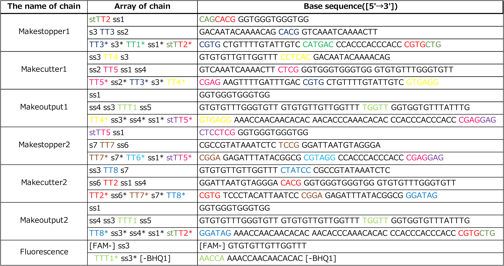
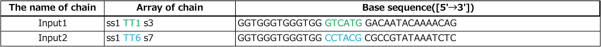
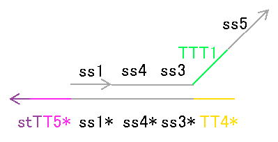
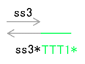
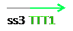

Type of strands
We designed strands that are shown in Figure1~6.
Figure.1 Makestopper1

Figure.2 Makecutter1
Figure.3 Makeoutput1
Figure.4 Makestopper2

Figure.5 Makecutter2
Figure.6 Makeoutput2
In addition to these strands, we prepared a strand is shown in Figure7 to confirm whether output is released.
Figure.7 Fluorescence
Also, we designed DNA sequences by visual DSD and NUPACK.
Each DNA sequences are shown in below table1.

Colored portion shows toehold.
Each color of toehold corresponds to color of toehold in Fig.1~Fig7.
In addition, Input DNAs and their DNA sequence are shown in Fig.8, Fig.9 and Table2.
Figure.8 Input1
Figure.9 Input2

Colored portion shows Toehold.
Each color of Toehold corresponds to color of Toehold in Fig.8 and Fig.9.
We experimented with these strands.
Verification experiment
We had a question that Makeoutput and Fluorescence may react, since they have complementary sequence TTT1 and TTT1*.
If they react, the output is not released as we desired.
Figure.10
Therefore we conducted verification experiment with Makeoutput1, Fluorescence and Verification input.
|  |  |  |
Figure.12
step 1-1 Dilution
We diluted the concentration of strands until they become desired concentration.
This experiment performed at 20℃ in Tris-EDTA buffer supplemented with 12.5mM MgCl2.
Figure.13
step 1-2 Annealing
We annealed them from 95 to 20℃(-1℃/min) after heat at 95℃ for 15 minutes.
Figure.14 Thermal Cycler (GeneAtlas 322/325)
step 1-3 Fluorescent observation
We applied FRET to confirmed how much output is released by using Spectrofluoremeter(FP-8300,JASCO) and measured the fluorescence intensity.
We used FAM as fluorescence molecule and BHQ1 as quencher molecule. The wavelength we measured is 521nm at excitation light 496nm.
測定時間と測定間隔は今後追加
Figure.15 Spectrofluorometer(FP-8300,JASCO)
step 1-3-1
We measured fluorescence intensity for 30 minutes after adding Fluorescence and Makeoutput1 in a cell.
step 1-3-2
We add Verification Input at 30 time after step 1-3-1, and measured fluorescence intensity.